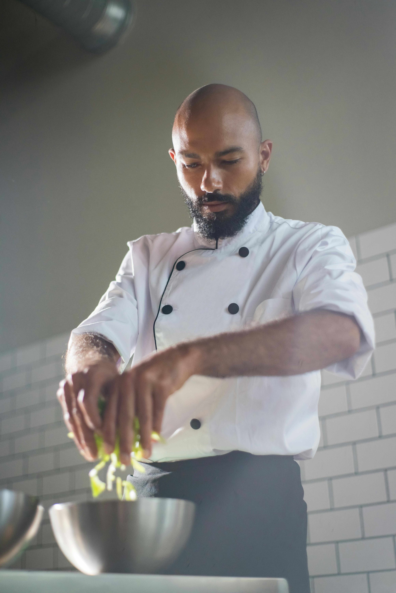
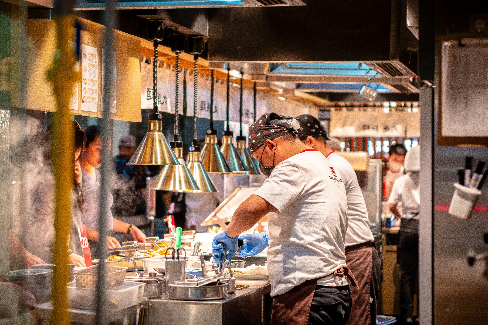
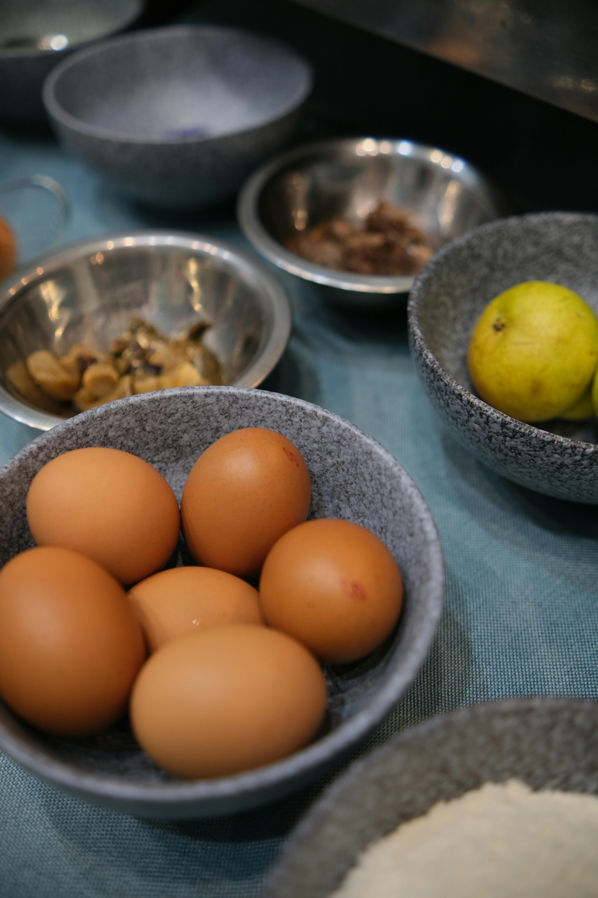

Our Story

Meet Milo Herrera
Milo Herrera has been cooking since he was a kid helping his grandmother in the kitchen. He grew up in San Antonio, but his family is originally from El Salvador, so many of the recipes here come from that side of his background. He never went to culinary school or anything like that — he just loved to cooked, and he worked in a few local restaurants, and eventually saved up enough to open his own place in 2011. The name "Papa Milo's" came from his kids, who started calling him that when he would cook big meals for the whole neighborhood.
The restaurant started out pretty small — just a few tables and a limited menu. But people kept coming back, and it kind of grew from there. Milo still comes in most days and does a lot of the cooking himself. He says the most important thing is that the food tastes like something you'd eat at someone's house, not something that came out of a factory. Everything is made fresh and most of the recipes haven't changed since he opened.
What Makes Papa Milo's Unique
We're not a chain and we don't really want to be. The menu is based on recipes Milo has been making for years and it doesn't change much. Some of the dishes take a long time to make — the birria gets braised for most of the day and the tortillas are made fresh for each order. It's not the fastest way to run a kitchen but it makes a difference in how everything tastes.
We also try to support the neighborhood when we can. We get most of our produce from local farms and donate extra food to the San Antonio Food Bank at the end of the night. Milo grew up here so it matters to him that the restaurant gives something back to the community.
Papa Milo's at a Glance
| Founded | 2011 |
|---|---|
| Owner & Chef | Milo Herrera |
| Specialty | Oaxacan-Tex-Mex Fusion |
| Seating | 82 guests + patio |
| Awards | Best Mexican Restaurant SA (2021–2024) |
| Community | San Antonio Food Bank Partner |
Life at Papa Milo's


